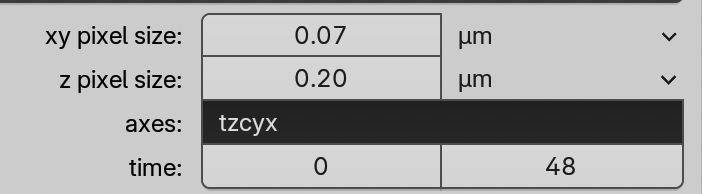
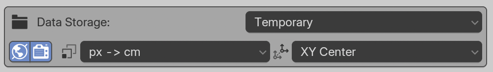

Loading microscopy data
Video tutorials
The Fluorescence tutorial shows how to load emissive data, and the EM tutorial shows how to load scattering data, these settings can be good to interchange!
The labelmask/surface tutorial is shown for EM data, but can be useful for any data type and binary or label masks:
1. Point to your data
-
Delete everything in the scene with
AandX -
In the Scene Properties panel, find the Microscopy Nodes panel.
-
Provide the path to your data set:
local TIFF file (preferably imagej-tif, but others work)
OME-Zarr URL
local OME-Zarr folder
For local files, you can use the file explorer .
With OME-Zarr URLs/folders, copy the address directly into the field. OME-Zarr links are not clickable. If the metadata does not populate, check out our tips for troubleshooting OME-Zarr.
Example OME-Zarr datasets:
- https://s3.embl.de/microscopynodes/RPE1_4x.zarr ; Showing expansion microscopy of an RPE1 cell with cytoskeletal elements stained
- https://s3.embl.de/microscopynodes/FIBSEM_dino_masks.zarr ; Showing a dinoflagellate FIB-SEM dataset with segmentations
- The Image Data Resource OME-Zarr archive. Some may not work.
2. Select scale (optional)
Microscopy Nodes automatically selects the smallest scale of data available.
Downscaled versions get created if the data is over 4 GiB per timepoint. For OME-Zarr, all premade scales are also shown.

Any scale with a volume icon will easily work in any part of Blender. The 1 icon is of a size where a single channel will definitely work. For larger datasets, check out the large data tutorial.
3. Check metadata
The metadata populates automatically from the file: 
This contains:
- Pixel Sizes
This may be truncated in the view, up to 6 decimal places are used.
- Pixel Units
Å to m, or 'arbritrary unit (a.u)'
- Axis order
A piece of text such as 'tzcyx'. number of letters needs to match the number of axes. Allows remapping of axis order by editing the text field.
- Time (only if time axis exists)
Start and end frame, allows you to clip the time axis before loading.
4. Set channels
Next we see the channel interface:

From left to right:
- Channel name (editable)
- Visualization types:
- Volume
- Surface
- Labelmask
- Emission on/off
- Colormap type:
- Single Color
- Linear
- Diverging
- Categorical
- Color Picker ( if )
The Visualization type defines which objects will be loaded. If none are clicked in a channel, this channel will not be loaded.
When loading with Emission on , the objects of this channel will by default emit light. If this is off , they will reflect/scatter light from the scene or background.
The Colormap choice gives basic options for color before loading. If Single Color is picked, the colormap will be linearly black -> color picked in the color picker.
Defaults can be changed in the preferences.
Labelmasks
Labelmasks expect an array with separate integer values per object. If it gets a data channel, it will try to still split it into separate objects
5. Extra import settings (optional)
These settings are below the Load button as they are not essential to remap for your first load. They can be useful to change if you're using Microscopy Nodes more often, or have specific needs. Most of these will persist between sessions.

This includes the Data Storage - where the intermediate files get stored
- Temporary (Default)
Puts the data in a temporary file, you can check the temporary path in the preferences
- Path
Gives a field to put in a location.
- With Project
Will create a folder next to the project location. Requires that the project is saved
overwrite the world color upon loading. This is useful as the world color (white, black or grey) is used as default lighting.
overwrite render settings upon loading. This turns itself off after the first load, to avoid overwriting custom settings.
defines the input transform - Blender works in meters, but Microscopy Nodes uses this as multiple optional coordinate spaces:
px -> cmDefault, scales the object such that each pixel takes 1 cm space in XY. Scales the Z axis such that it is isotropic with XY.
Å -> mnm -> mµm -> mmm -> mm -> mnm -> cm (Molecular Nodes)
defines the input location:
XY CenterXYZ CenterOrigin
Choosing an input transform
Note that you may need to go one scale higher than you expect with the input transform, as a few meters is already quite large (the default cube is 2 m). The normal unit is the size of your dataset, and not always the unit of your pixel size.
6. Load
Press the big Load button to load a dataset